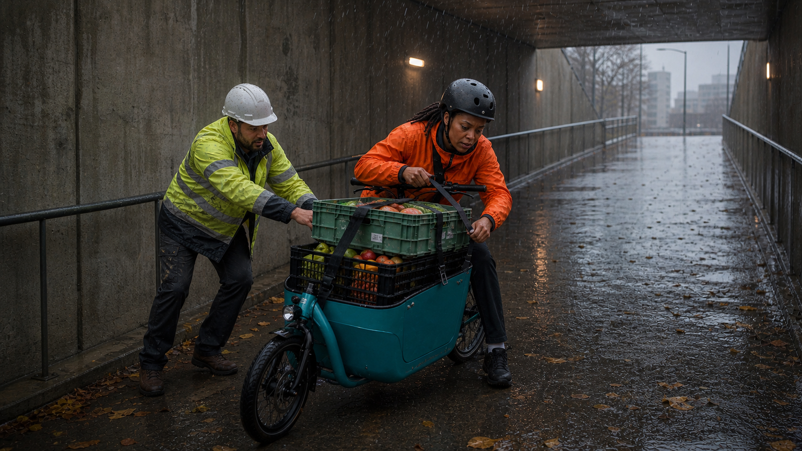

Activity 1
Scene Planning Lab
A documentary scene is a present-time event—not simply a topic, location, or interview. Test what makes a scene filmable, plan the scenes your short documentary needs, place static and dynamic interviews, and build a sequence that tells a story.
Private by design. No login, submission, analytics, or numerical score. Your writing stays in this browser unless you copy, download, or print it. Do not enter private contact details.

Part 1 · Scene essentials
What makes something a scene?
Explore the six elements, then compare a topic, a setup, and a filmable scene. There is no score: the aim is to sharpen your judgment.
Topic, setup, or scene?
Choose an example to examine what is present and what is still missing.
Part 2 · Read an example
A subject becomes a sequence of scenes
Study how a contributor, a story question, and four present-time events create a progression. Move scenes to see how order changes meaning.
Part 3 · Build your scene list
Plan the story events you can film
Start with your subject and central contributor. Then plan each scene as an event with action, pressure, evidence, and a story consequence.
Part 4 · Place interviews
Decide what should be said—and what should be seen
Place interviews deliberately. A static interview can deepen reflection; a dynamic interview can reveal thought during action. Neither should replace filmable scenes.
Interview placement by scene
Part 5 · Sequence and export
Arrange the scenes to tell the story
Move scenes earlier or later. Look for progression: what the audience learns, feels, expects, and understands should develop across the sequence.
Your saved work
Reset permanently deletes this activity’s saved writing and choices from this browser.